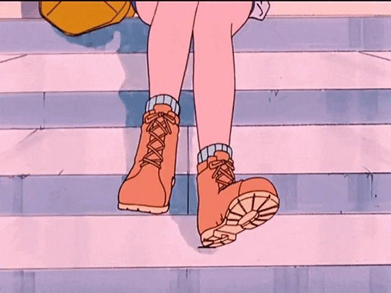

A Vapor Store é uma loja baseada na estética Vapor.
Essa estética surgiu em meados de 2010 entre algumas comunidades na internet.
Seu conceito é caracterizado por uma fascinação nostálgica pela estética dos anos 80 e 90,
abrangendo referências a diversos aspectos culturais produzidos à época. Tais como a tecnologia da época,
jogos eletrônicos, cultura nipônica, esculturas neoclássicas, pós-modernismo,
músicias comerciais e à estética cyberpunk.
Clique aqui para conferir nossos produtos!